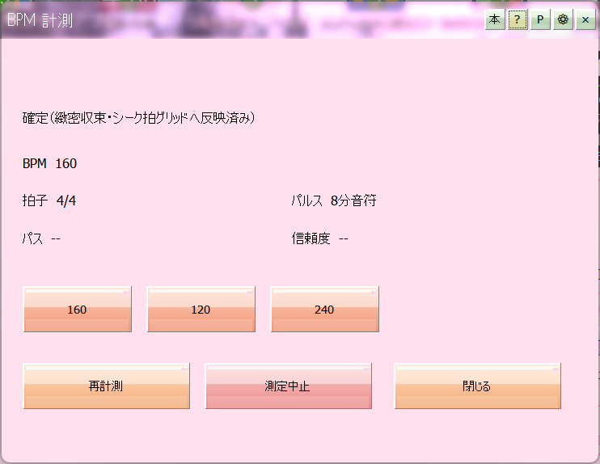

Measuring BPM
BPM is beats per minute — how fast the music runs. A measured BPM feeds the beat grid on the seek bar and helps you choose a crossfade duration.

BPM detection
Measuring
- Press the BPM button on the media player's bottom row.
- Play the track (or let it listen to whatever your PC is playing).
- Tick the measure box and it starts counting as it listens.
- Let it run until the number settles, then untick the box.
- The value at the moment you untick is applied to the beat grid and the export crossfade duration.
What the value is good for
- The beat grid
- Vertical beat lines appear on the seek bar, so you can think in terms of "four bars later". See Reading the seek bar.
- Lining up the beats
- If the lines sit slightly off the real beat, hold Alt and drag on the seek bar to shift them. That offset is remembered per track along with the BPM.
- Crossfade duration
- Knowing the tempo makes it much easier to pick a duration that lands on a beat boundary. It pays off in both Continuous-play crossfade and Audio export (WAV / mp3 / FLAC).
- Beat nudges
- The beat nudge on Playing with the DJ pad starts behaving properly.
If you want a metronome
To practise against an audible click, the metronome in Tuner practice is the better tool. You choose BPM and time signature, and the first beat of each bar clicks higher.
Where the value is kept
BPM, the beat offset and the key are stored per track in SongParams.dat and come back the next time you play. Measure once and it stays measured.
Tip
It can measure audio from other programs on your PC, so it also works for finding the tempo of something on a video site.
Please note
Tracks whose tempo changes partway through, or whose beat is not clearly defined, may not measure well. In that case, let it listen only to a section where the beat is obvious.